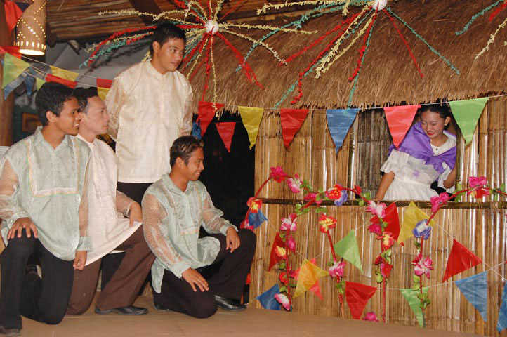
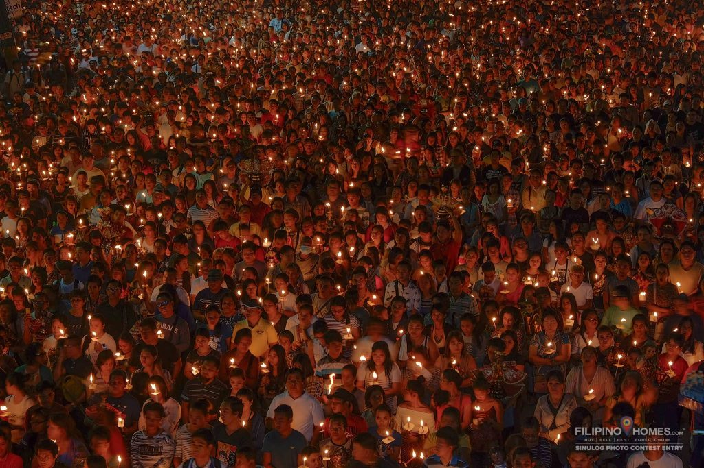

|
|
Sinulog Sinulog festival is one of the most famous festivals and biggest festivals in Cebu held every third
Sunday of January to honor the baby Jesus, Santo Niño. This event is a colorful, vibrant, cacophonic but heart-beating
and exciting celebration.It is celebrated for nine days that culminates on the final day with a Sinulog Grand Parade.
For more info: https://www.zenrooms.com/blog/sinulog-festival/https://iamaileen.com/sinulog-festival-cebu-philippines/ https://youtu.be/_N3_I-raIPE |
|
|
Wake or Vigil Wake or vigil is one peculiar aspect of Cebu’s customs and traditions which is still in practice to this day.
Wake usually takes five to seven days or even longer if the bereaved family is still waiting for someone’s arrival
from distant provinces or from outside of the country. The dead body is preserved by embalming it and placing it in a
coffin surrounded with some ornaments, including flowers, photo of the dead, and funeral lights.
For more info: https://www.korbanchapel.com/filipino-funeral |
|
|
Superstitions Superstitious beliefs do not only apply to Cebuanos but also the people outside of Cebu as well. Some of
the superstitious beliefs for Cebuanos are, black cats are a sign of bad luck or death, sweeping the floor
when there’s a wake, fishbone dilemma, and more.
For more info: https://queencitycebu.com/sugbuanong-tuo-tuo-superstitious-beliefs-among-cebuanos/ |
|
|
Birth
For more info: https://www.yodisphere.com/2022/08/Cebuano-Culture-Bisaya-Kultura.htmlhttps://www.ucbaby.ca/baby-birth-traditions-the-philippines |
|
|
Baptism After a child has been born it is the custom of the Cebuanos to baptize the child after a few days or few weeks. During that time godparents are carefully chosen because they are the child’s second parent/s. It is necessary to carefully choose the godparents of the child because the parents want their child to emulate the good examples shown by his/her godparents.
For more info: https://www.jojies.com/baptism-in-the-philippines/https://youtu.be/qJmJZNk6BLs |
|

|
Courtship Similar to other places in the Philippines, Cebuanos also have this serenade or harana in Filipino, but in Cebuano, it’s called ‘balak’. This is when a man is in love with a girl. He takes his first step by visiting her at home with the consent of the girl’s parents, dressed in his best clothes, and bringing homemade delicacies and serenades. Sometimes the man will bring another person or a third person to act as his go-between to help him win over the girl he loves. Another important requirement when serenading is when the parents of the girl ask for a living dowry consisting of a certain amount of money and some valuable pieces of jewelry.
For more info: https://www.yodisphere.com/2022/08/Cebuano-Culture-Bisaya-Kultura.htmlhttps://cebuwomen.com/dating-in-cebu-philippines.html |
|
|
Marriage The preparation for the wedding party is done at the groom’s house and part of it is brought to the bride’s house which is to be served to her guests and relatives. The expenses for the party are the groom’s responsibility.
For more info: https://www.sunstar.com.ph/article/1750254/cebu/lifestyle/cebuano-wedding-traditions |
|
|
Funeral During the burial day of someone who died, it is part of Cebu’s customs to have a procession towards the church, have a mass there and another procession towards the cemetery and a prayer will be held. The coffin with the deceased is either carried by family members (or male relatives) or loaded into a hearse.The family and relatives of the deceased are usually wearing black colored clothing to symbolize their grief or sorrow.
For more info: https://annpeace.wordpress.com/2009/02/17/filipino-or-cebuano-funeral-traditions/#:~:text=It%20is%20common%20in%20Cebu,trash%20and%20you're%20done. |
|

|
Walk With Jesus Walk with Jesus marks the start of the yearly Sinulog festival celebration. Starting at four in the morning, thousands of devotees endure the cold to be in a solemn procession that starts at Fuente circle and ends at the Basilica. During the procession, devotees light their candles and speak of silent prayer or sing the song “Bato-Balani sa Gugma” in unison. When viewed from the top, it would look like a river of light flowing. For more info: http://mycebuphotoblog.com/2020/02/04/walk-with-jesus-2020-never-ending-devotion/ |
|
|
Spanish Heritage Cebu City retains its long Spanish heritage. There is a site where Ferdinand Magellan landed on April 7, 1521. He sealed a blood compact with the chief of Cebu, Humabon. But later on, he was killed by Chief Lapulapu of nearby Mactan Island.
For more info: https://shezlikethewind.com/2022/02/17/cebu-citys-spanish-heritage-sites-exploring-the-philippines/#:~:text=The%20most%20visited%20Spanish%20Heritage,and%20Basilica%20del%20Santa%20Nino. |
References